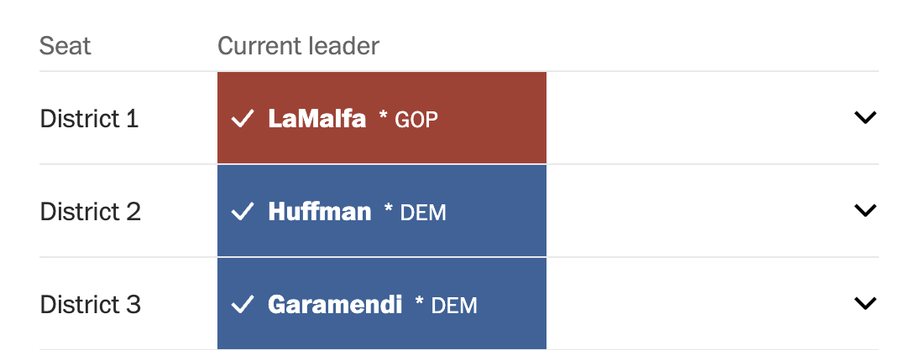

General House Results Table Redesign
Leading a full redesign for The Washington Post's 2022 election coverage
My Role
- Position: Staff Software Engineer
- Responsibilities: UI/UX Design, Front-End Development, Product Management
- Collaborators: Journalists, Designers, Engineers, Leadership
Summary
I led the redesign and development of the General House Results table, a key component of The Washington Post's 2022 election coverage. The feature displayed results for all general House races in a state. My role spanned product management, UI/UX design, and front-end engineering.
Problem
The original table was outdated and visually clunky, lacking interesting context and failing to meet modern design standards. Readers found it difficult to quickly interpret race outcomes. It also lacked key indicators, such as the district's historical political lean and the percentage of current vote count. Working examples of the old version are still on old election pages like this one.
Goals
- Improve user experience and visual clarity
- Align with The Post's modern design system
- Add contextual features (e.g. 2020 Trump/Biden results)
- Ensure stability during high-traffic election night
Process
I started by reviewing user research and internal feedback. I explored multiple layout and hierarchy options in Figma and shared drafts with reporters, editors, and engineers. After rounds of critique and iteration, I implemented the final design and tested it thoroughly leading up to election night.
Design Decisions
- Updated colors to reflect The Washington Post's current style
- Added background colors behind the district name to further visually highlight leading candidates
- Included a column to show whether the district voted for Trump or Biden in 2020
- Focused the design on clarity and quick scannability over exhaustive detail

Challenges
One major challenge was incorporating feedback from many stakeholders while working under tight deadlines. Just before the election, a visual bug appeared that I traced to a third-party package. I rolled back the version and submitted a fix upstream, ensuring stability for the live event.
Impact
- Successful launch with no issues on election night
- Positive feedback from readers and internal leadership
- Improved usability and visual clarity
Reflection
This project showed me the value of cross-functional collaboration and fast, thoughtful iteration. I’m proud of delivering a high-quality product under pressure—and of owning the full process from ideation through release.
Project information
- Category Web design & development
- Client The Washington Post
- Tools Figma, TypeScript, React, Stitches
- Project date July, 2022
- Project URL https://www.washingtonpost.com/election-results/2022/california/
- Visit Website